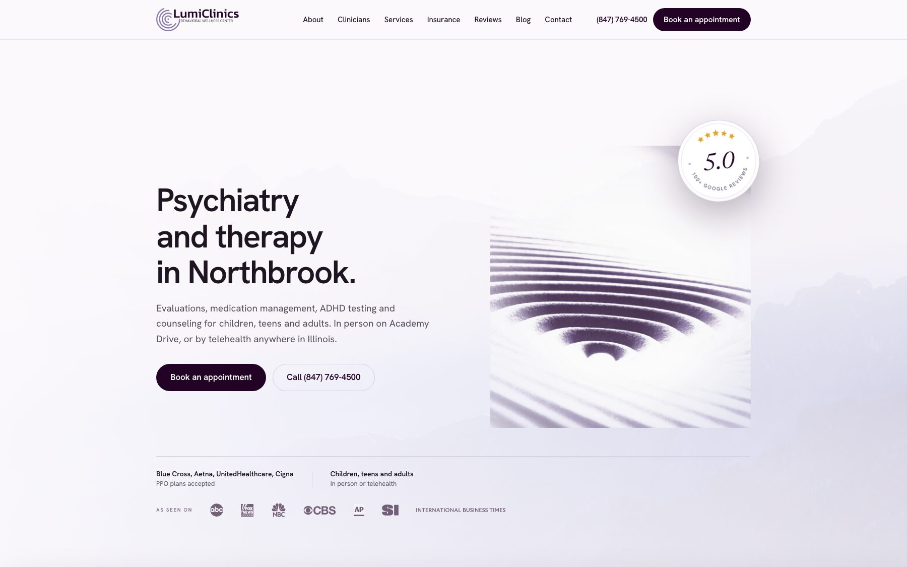

HIPAA boundaries on a practice website: the public layer and the PHI layer.
A practice website has 2 layers. One is marketing that anyone can read. The other is where a patient books, fills in a form, or logs in, and that is where protected health information starts moving. This page maps 10 common data flows to a layer, names who receives the data, flags where a business associate question arises, and says which analytics belong on each side. One live psychiatry and therapy practice is reviewed against the map.
Two layers, one line between them.
HHS's Office for Civil Rights frames a practice website in the same 2 categories: unauthenticated pages, which usually do not expose PHI, and user-authenticated pages such as a patient portal or telehealth platform, where tracking code generally does have access to PHI. The build starts by deciding which pages are which, because the answer changes what code is allowed on them.
Public marketing layer
Home, services and conditions pages, provider bios, locations, insurance accepted, education and blog content, and the schema and search markup behind them. A visitor reads these without identifying themselves. HHS says tracking technologies on many pages like these do not have access to PHI, so the HIPAA Rules do not regulate their use there. That is the layer where ordinary web analytics can live.
Protected patient-interaction layer
Appointment requests and online booking, intake and medical-history forms, secure messaging, the patient portal and its login page, telehealth, and any integration with the practice's EHR or scheduling system. The visitor now types a name, a reason for the visit, an email, or credentials. HHS says that combination generally meets the definition of individually identifiable health information, so a vendor that receives it is a business associate question, not a marketing question.
Where a public page stops being public
The line is not the URL. It is the moment a page collects something about a person's health or care. HHS gives 2 examples on its own bulletin: an unauthenticated page that lets someone schedule an appointment or enter symptoms, and the portal login or registration page where a person types credentials or a name and email. Both are public URLs, and both can disclose PHI to whatever tracking code is loaded on them.
A June 20, 2024 federal court order vacated 1 part of the HHS bulletin: the position that HIPAA is triggered when tracking code merely connects a visitor's IP address with a visit to an unauthenticated page about a health condition or provider. The rest of the bulletin stands as HHS guidance, and HHS notes the document does not have the force of law. Your privacy officer and counsel decide how it applies to your practice.
10 data flows, each assigned to a layer.
This is the document a practice should be able to hand its privacy officer before a website launches. Each row names the flow, the layer it belongs to, what data is involved, who receives it, and the vendor and tracking answer that follows. Print it, fill in your vendors, and keep it with your risk analysis.
| Data flow | Layer | Data involved | Who receives it | BAA and tracking answer |
|---|---|---|---|---|
| 1. Service, condition, and provider pages | Public | Page views, device and browser data, IP address. | The web host and any analytics vendor loaded on the page. | Generally outside the HIPAA Rules per HHS, so privacy-respecting analytics are reasonable here. Keep the page free of forms so it stays public. |
| 2. Blog and patient education | Public | Same as row 1. No identity is collected unless a newsletter form is added. | Host and analytics vendor. An email tool if a signup form exists. | Adding a signup form on a condition-specific article turns a reading page into a collection point. Decide whether that form belongs here or on a neutral page. |
| 3. Contact page with phone and email links | Public | A tap on a tel: or mailto: link. The call or email itself happens off the website. | The practice's phone system and inbox, not the website vendor. | The cleanest public contact page. Whether the inbox and phone vendors need a BAA is a question about those systems, not the site. |
| 4. Analytics on public pages | Public | Page paths, referrers, device data, and depending on the tool, IP address and persistent identifiers. | The analytics vendor. | Choose the tool for the layer. A cookieless, privacy-first tool on public pages is the conservative default. HHS says a cookie banner is not a HIPAA authorization and a vendor's promise to de-identify data is not a substitute for a BAA. |
| 5. Ad pixels and retargeting | Public, with a warning | Page paths plus a persistent advertising identifier that follows the visitor across sites. | The ad platform. | HHS states that disclosing PHI to tracking vendors for marketing without a HIPAA-compliant authorization is an impermissible disclosure. A pixel that fires on a booking or intake page is exactly that. Most practices TMN works with keep ad pixels off the site entirely and measure ads by landing-page conversions that do not collect health details. |
| 6. Appointment request and online booking | Protected | Name, contact details, requested provider or service, reason for visit, sometimes insurance. | The scheduling or intake vendor the practice chose, and any tracking code on that page. | HHS uses appointment scheduling as its example of an unauthenticated page that discloses PHI. The scheduling vendor is in business associate territory. TMN's default is to send booking to the practice's own system on its own domain rather than embedding a form in the marketing site, so the marketing site never stores the request. |
| 7. Intake, history, and consent forms | Protected | Medical history, medications, symptoms, insurance identifiers, signatures. | The forms or EHR vendor. Never the website host if the form lives elsewhere. | This is PHI on its face. It belongs in a system the practice has a BAA with, behind the practice's own login, with no marketing analytics on the page. A general website form builder is the wrong tool. |
| 8. Patient portal, secure messaging, and telehealth | Protected | Credentials, appointments, diagnoses, prescriptions, billing. | The portal, EHR, or telehealth vendor. | HHS says tracking code on authenticated pages generally has access to PHI and that the login and registration pages count once a person types credentials or a name and email. The marketing site should link to the portal, not host or frame it. |
| 9. Chat widgets, session replay, and symptom checkers | Protected the moment someone types | Whatever the visitor writes, plus mouse movement and keystrokes in the case of session replay. | The chat, replay, or checker vendor. | HHS names session replay scripts and symptom checkers specifically. A visitor who types a diagnosis into a chat box has handed the vendor PHI. Skip these on a practice site unless the vendor is under a BAA and the practice wants that relationship. |
| 10. Embedded maps, fonts, and video players | Public, third-party request | The visitor's IP address and the page URL, sent to the provider when the asset loads. | The map, font, or video provider. | These are not tracking pixels, but they are third-party requests on a health page. Self-hosting fonts and linking to a map instead of embedding it removes the request. Where the embed stays, the privacy officer should know it is there. |
Layer assignments follow the structure of the HHS Office for Civil Rights bulletin on online tracking technologies, read in full on Sep 3, 2026. The bulletin is guidance, not law, and part of it was vacated in 2024. Whether a specific vendor is a business associate depends on what it actually does with the data, a determination HHS assigns to the regulated entity. Your privacy officer and counsel own that call.
One live practice site, reviewed against the map.
LumiClinics, a psychiatry and therapy practice in Northbrook, Illinois, whose website TMN designed and built. The review below covers only what a visitor can inspect on the public site. The right-hand column states what a public review cannot see and who can.

| Flow | What is visible on the public site | Boundary |
|---|---|---|
| Public pages | Form-free. The homepage, contact page, and insurance page contain no forms, no input fields, and no embedded iframes. A visitor can read every page without identifying themselves. | A bounded review of 3 pages on the date shown. The practice controls what it adds later. |
| Booking | Sent off the marketing site. “Book an appointment” links out to the practice's own booking system on a lumiclinics subdomain of its scheduling vendor. The marketing site never receives the request. | The practice selected its scheduling vendor. Whether a BAA is in place with that vendor is between the practice and the vendor, and a public review cannot confirm it. |
| Patient portal | Linked, not hosted. The patient portal is a link to the same vendor's portal. No login form, credential field, or portal frame appears on the marketing site. | Portal security, access controls, and vendor terms sit with the practice and its vendor. |
| Analytics | 1 cookieless tool. The only third-party script on the reviewed pages is Fathom Analytics. No Google Analytics, Google Tag Manager, Meta pixel, Microsoft Clarity, or Hotjar loads. | Script inventory as observed on the review date. Analytics on the vendor-hosted booking and portal pages were not in scope. |
| Insurance details | Handled by phone. The insurance page lists accepted PPO plans and asks patients to call for verification rather than submit plan details through the website. | What happens on the call is the practice's process, not the site's. |
| Crisis routing | Explicit. The contact page directs anyone in crisis to call or text 988 or 911 and states that the website and voicemail are not monitored for emergencies. Phone and email are plain tel: and mailto: links. | Clinical policy language was approved by the practice. |
| Third-party requests | 1 remaining. Web fonts load from Google Fonts, which receives the visitor's IP address on public pages. Maps and social profiles are plain links, not embeds. | Self-hosting fonts would remove this request. That is a change the practice can request through site care at any time. |
| Credit | Present. The footer credits TMN Creative and links to this site. | Corroboration you can check yourself. TMN did not review the practice's policies, risk analysis, or vendor agreements, and does not certify compliance. |
Open the live practice site, view the page source, and repeat the script inventory. Read the full LumiClinics case study or see how to verify any claim TMN makes.
The map is drawn before the design is.
TMN is not a HIPAA consultant and does not certify anything. What TMN does is build the marketing layer so that it stays marketing, route every protected flow to a system the practice already controls, and hand the privacy officer a document that says where each flow goes.
Inventory the flows first
Before layout starts, TMN lists every place the site could collect something about a person: booking, intake, contact, newsletter, chat, portal links, and embeds. Each one is assigned to a layer with the practice. Anything protected gets a destination outside the marketing site.
Keep the public layer form-free where possible
The default marketing site collects nothing. Calls to action are tel: links, mailto: links, and buttons that open the practice's own booking system. If the practice wants a general inquiry form, it is short, avoids health questions, and its destination is agreed in writing.
Booking and intake on the practice's own system
TMN does not build intake forms into the marketing site and does not stand between the patient and the EHR. Booking links go to the vendor the practice selected and holds the agreement with. The site never stores a request.
Analytics chosen for the layer
Public pages get a cookieless, privacy-first analytics tool by default, and no ad pixels, session replay, or heatmaps. Practices that need conversion measurement get it from landing-page events that carry no health details. Anything beyond that is a decision the privacy officer makes with the vendor list in hand.
A written boundary map at handoff
At launch the practice receives the completed version of the table above: every flow, its layer, its destination vendor, and every third-party request on the site. It is a review input for the practice's risk analysis, not a compliance opinion.
Priced like the rest of TMN's work
Practice sites start at $2,250 for a Starter Refresh, $3,750 for a Full Site Rebuild, and $5,000+ for a Custom Studio Build. The boundary work is part of the build, not an add-on. Ongoing changes, including removing a third-party request, run through Site Care.
What practice owners ask before a build.
Can a medical practice use Google Analytics on its website?
It depends on which layer the tool runs on and what it receives. HHS says tracking technologies on many unauthenticated pages do not have access to PHI, so ordinary analytics on service and provider pages generally sit outside the HIPAA Rules. The same tool on a booking page, an intake form, a portal login, or any page where a visitor types health details is receiving PHI, and HHS says that vendor then needs a business associate agreement and a Privacy Rule permission for the disclosure. Because Google Analytics loads sitewide by default, many practices choose a cookieless tool for public pages and keep the protected flows on a separate vendor-hosted system with no marketing analytics at all.
Does my web designer need to sign a business associate agreement?
Only if the designer creates, receives, maintains, or transmits PHI on the practice's behalf, which is the HHS definition of a business associate. A designer who builds a marketing site with no forms and no access to patient data is not handling PHI. A designer who hosts intake forms, receives appointment requests, or has credentials to the EHR is. TMN's build keeps the marketing site form-free or limited to non-health inquiries and routes booking and intake to the practice's own vendor, so TMN does not receive PHI. The practice's privacy officer makes the final determination for each vendor, and HHS notes that a vendor is a business associate based on what it does, whether or not an agreement was signed.
Does a cookie consent banner make tracking on a health website compliant?
No. The HHS bulletin states directly that website banners asking users to accept or reject cookies do not constitute a valid HIPAA authorization. It also states that a tracking vendor's promise to remove or de-identify PHI after receiving it is insufficient. If a page discloses PHI to a vendor, HHS's position is that the vendor needs a signed business associate agreement and the disclosure needs a Privacy Rule permission, or the individual needs to give a HIPAA-compliant authorization first.
Is an appointment request form on a public page PHI?
HHS uses this exact example. A page that lets someone schedule an appointment without logging in may collect an email address or a reason for seeking care, and HHS says that information meets the definition of individually identifiable health information, so any tracking code on that page is receiving PHI. That is why TMN treats booking as a protected flow even though the URL is public, and sends it to the practice's own scheduling system rather than embedding a form in the marketing site.
What did the 2024 court order change about the HHS tracking guidance?
On June 20, 2024, the U.S. District Court for the Northern District of Texas vacated the part of the bulletin stating that HIPAA obligations are triggered when tracking code connects a visitor's IP address with a visit to an unauthenticated public page about specific health conditions or providers. HHS added that notice to the top of the bulletin and says it is evaluating next steps. The rest of the bulletin, including the positions on authenticated pages, appointment and symptom-checker pages, cookie banners, and business associate agreements, still reads as HHS guidance. HHS also notes that the document does not have the force of law.
Does TMN Creative certify that a website is HIPAA compliant?
No, and no website vendor should. HIPAA compliance is a property of the covered entity's policies, risk analysis, safeguards, and vendor agreements, not of a website design. TMN builds the marketing layer so that it stays marketing, routes protected flows to systems the practice controls, keeps ad pixels and session replay off practice sites by default, and hands over a written boundary map at launch as a review input. The practice's privacy officer and counsel decide what is compliant. This page is general information, not legal advice.
Want a site your privacy officer can sign off on in one read?
Tell us the practice type and the systems you already use for booking and intake. We’ll build a free homepage preview in 48 hours so you can see the direction before committing. No retainer. No pressure.